Gimme-Gimme
Shock Treatment
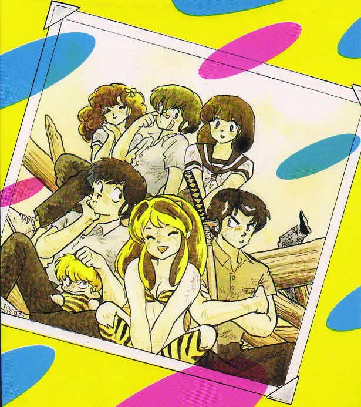
An Urusei Yatsura fanpage
Urusei Yatsura (apparently untranslatable pun, but usually given as 'Those Annoying Aliens' or some variant) is a science-fantasy romance-comedy manga by Rumiko Takahashi, which started publication in 1979 and finished in 1987. It has received two anime adaptations, one in the 80s and one between 2022 and 2024, and I like it very much.
This is a little shrine page I made for it.
Urusei Yatsura is about a perpetually-unlucky senior-year highschooler named Ataru Moroboshi, who operates using the same binary decision-making structure used by most insects:
- When he is hungry, he seeks out food, and
- When he is full, he hits on women (in over-the-top comical fashion.)
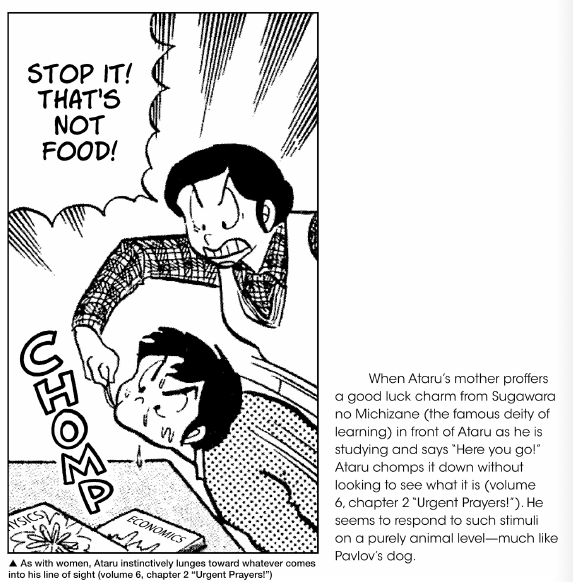
Maybe that's a bit uncharitable--Ataru is generally characterized as a slightly neurotic young man who puts up this act as a way to mask his insecurity over his own masculinity (or lack thereof) and social standing (such is the nature of high-school boys.) Beneath it, he's repeatedly shown to be a loyal, gentle, somewhat sensitive person... really a rather likeable guy once you get past the, you know, absolutely everything about him.
Despite his (many, many) flaws, Ataru has somehow convinced a woman to be his girlfriend by the start of the series; her name is Shinobu. She is a very normal girl, mostly, who tires of his girl-chasing ways but puts up with them out of some genuine conviction torwards his likeability as a person and/or lack of options. They exist in a frankly unremarkable fashion in late-70s early-80s Tokyo.
...until aliens show up!!
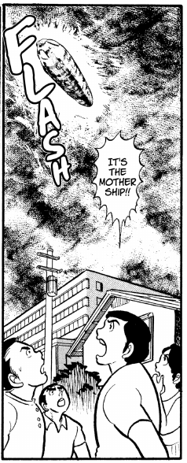
These aliens, who happen to look entirely too much like Japanese folkloric oni (get used to this because everything is Japanese folklore references from here on out), are here to take over the Earth, unless a randomly-computer-selected human being is able to beat them in a high-stakes game of tag by the end of ten days.
I suppose you can guess who gets picked.
Ataru's opponent, however, happens to be Lum, the beautiful slightly-hysterical hi-tempered alien princess at the top of this page. She is extremely attractive and also extremely unfair as an opponent considering she can fly and discharge electricity, so he feels pretty beat down by the whole thing. Shinobu helps him get a second wind through a hasty proposal: if he wins, she'll marry him! (You'd think he'd be put off by the idea, considering, but I guess this is your first indication as to the type of guy he really is...)
In the end Ataru wins, but only through an underhanded gambit: stealing Lum's bra.
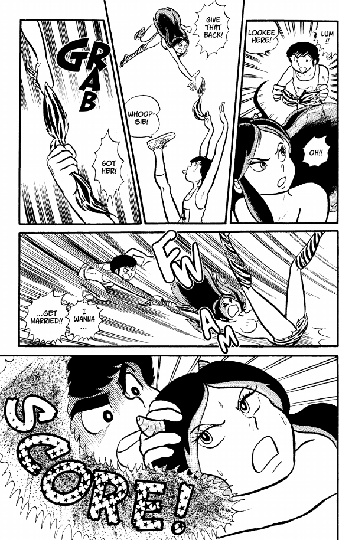
I can think of no better representation of the human race than 'somehow barely-likeable horny loser wins by miraculous stroke of luck directly arising from horny loserness.' It sums us up pretty well, when you think about it.
This pays off well for the human race but not well for Ataru, who is now married... to Lum, who misinterpreted his shouts during the game as a proposal to her. Also, she's extremely possessive and more than willing to electrocute him whenever he looks at another woman (which is all the time, because this is Ataru we're talking about.)
Thus begins a very long, astoundingly convoluted, shockingly sweet and extremely funny love-triangle romance-comedy...
Some time later a fourth party enters the love quadrangle ('love great stellated dodecahedron' might be more accurate): Shutaro Mendou, heir to the Mendou Corporation and thus to one of the richest and most powerful families in Japan. He quickly becomes the object of affection of every girl in school, including Shinobu for a time, thanks to his dashing good looks and deep pockets; of course deep down he is the same sort of attention-seeking, horny loser Ataru is, maybe a little less likeable somehow, but... you know how it is. Also, he threatens ritual suicide whenever he is minorly inconvenienced. Also also, his introduction in the 80s anime is this:
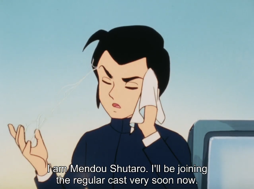
Maybe this isn't as funny in a screenshot but in context of this being him appearing in a time-travel holiday episode just before his actual introductory episode (likely planned to air in reverse order initially) where he's barely relevant and could have been easily left out makes this hysterical.
Aside from these 'main 4', there are loads of recurring characters and dozens of one-off minor characters who get involved in various ways... You name it, it probably shows up here: living fossils, emotionally manipulative pond-monsters, fairies (regular kind), fairies (Mothra kind), genetically modified turkeys, shapeshifting dolphins, tentacled aliens, lizardy aliens, stone-cold punk-rock-bitch aliens, sexually parasitic eusocial crow aliens, vampire aliens, regular vampires...
Urusei Yatsura was very successful at home in Japan, as it's long run should indicate. If it's premise sounds familiar or character designs look familiar, there's a very good reason for that, being that it was extremely influential at home. (There's even a Precure character based off Lum!)
It recieved dubs in Spanish and Italian and some cult-followings in appropriate jurisdictions, but no English translation until the late 90s, and so languished in relative obscurity here until the 2019 Viz Media manga translations and 2022 anime remake came out.
SO WHY DO YOU LIKE THIS CRAP SO MUCH?
I came across Urusei Yatsura in 2022 via the 2001 English 2-episode gag dub by the BBC in which every character speaks in an extremely British fashion.
It is extremely fucking funny and you can watch it yourself here on the Internet Archive. I like to bring it up because, well, obvious reasons but also because it exposes what is the fundamental truth about Urusei Yatsura, which is that it is basically the anime equivalent of older romance sitcoms and soap-operas where character relationships 'circle' themselves repeatedly (to suit the long episode runs) and rely not on character or plot development to remain compelling but instead on consistency with themselves in format and characterization; so over time, watching them, they attain a sort of 'comfort food' appeal to the viewer. It's not that nothing ever changes--things do shift around in Urusei Yatsura and remain shifted afterwards--but they change in very slow, steady ways and their change is never emphasized. You look at it through this ridiculous British-ified lens and suddenly it becomes clear that it's cut from the same cloth as Eastenders and the like, just with an absurdist sci-fi cartoon overlay.
In shorter words, there's a post about sitcoms--here it is:
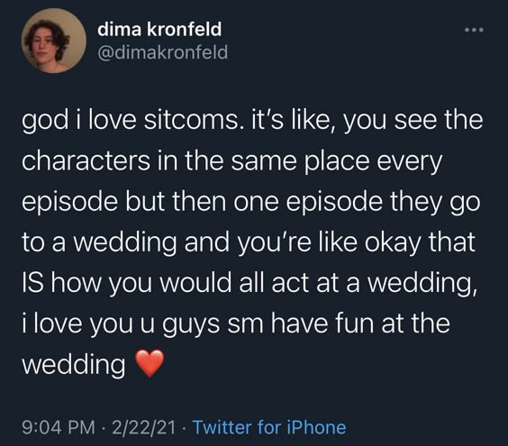
and Urusei Yatsura, for me, hits this same nerve, except instead of 'have fun at the wedding' it's, like, 'have fun at the pocket dimension between spacetime where immortal rabbitthings control everyone's eventual fate via a convoluted fairy-tale system of doors and doorknobs that doesn't make any sense if you think about it for more than two seconds'. And then instead of 'having fun' they're having a 'marital dispute' in which they 'yell swear words at each other', kind of like my parents actually. Huh.
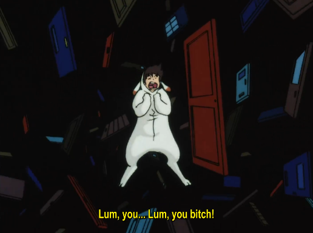
Said 'rabbit arc' is a great example of Urusei Yatsura's self-consistency. This arc (starting in Volume 16 Chapter 7 'Open the Door') exists solely to retcon an earlier chapter, all the way back in Volume 2, wherein Shinobu and Ataru are shown to be married in the future (this being because, in the early comic, they were intended to be the 'main couple'--and even earlier than that, in the first chapter Lum was supposed to be a one-off character, hence the second chapter not featuring her at all.) Of course Shinobu moves on from Ataru fairly soon after, being explicitly interested in Mendou after his introduction and being completely disinterested in both by this point, but the chapter remains.
So in 'Open the Door', when Ataru and Lum are well into their 'relationship', such that it is, and see that future--identical to the one in 'Intention'--they are both understandably disappointed (though of course Ataru has to dress it up in his usual stubborn fashion.)
Any other episodic romance comic would've let early-issue sleeping dogs lie, but Urusei Yatsura goes for the jugular--also see 'Wretched Shutaro' where the gang goes back in time to 'cure' Mendou's claustrophobia, every time Ryunnosuke's mother gets brought up...
Beyond the whole stories jumping off of them, there's also a lot of minor character details that remain consistent--little things like Ran's constant use of 'cutesy' Earth aesthetics even in very strange ways as you might expect from an alien (see the random unidentifiable portrait on her shelf in the below screenshot), Ataru's tendency torwards wearing horizontal stripes and color-block fashion and his habit of just grabbing shit off the ground all the time, Oyuki's penny-pinching (despite being a literal monarch), the semi-frequent implication through behaviour that Lum seeks out difficult men on-purpose and left Rei specifically because he was a little too easy to get along with, and her overt physical affection contrasting Ataru's subtler displays...) The 1980s anime adds a lot of original elements along these lines, and while the 2022 one drops a lot of these it remains very strict with the ones it keeps (mostly visual touches in fashion and movement tics.) Some of these service jokes, but a lot of them are just looseleaf details that contribute to a sense of lived-in-ness that you rarely get in comics, especially in comedy-focused comics where characterization is even sparser. It's a unique way to go about writing in a medium that typically values conciseness over almost everything else. And it adds a lot to the central romance elements... but more on that later.
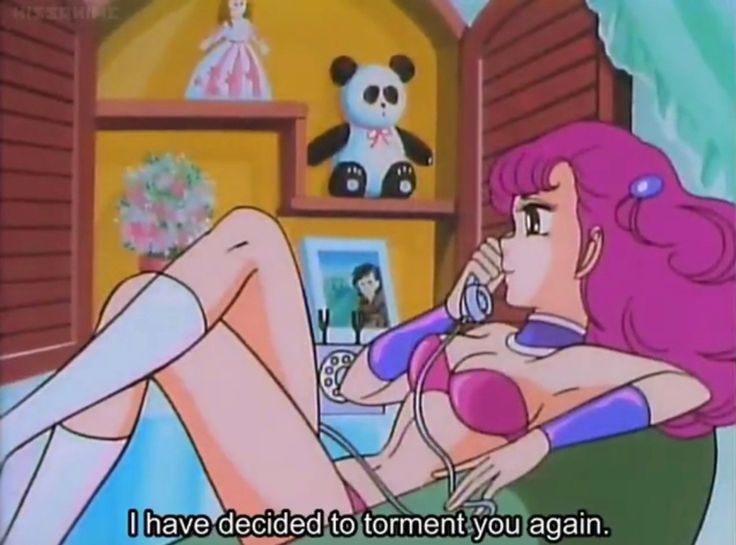
me logging onto Discord everyday
Something else unique about Urusei Yatsura is the way it's drawn.
It hits this balance between 1970s-80s comedy manga with a looser, lighter look and later typical shoujo-y artstyles, with a dash of classic sci-fi pin-uppy pulp art to taste. The artstyle progresses from leaning one way to leaning the other as it goes on; you can probably make that out from the panels used on this page.
It really fits it's own writing in the way comics ought to. Earlier it's usually used as contrast for comedic effect but later more romance-focused chapters play around with it in really fun ways.
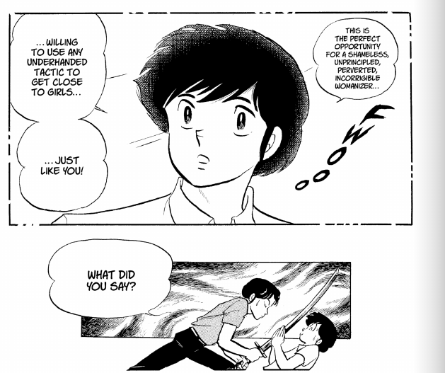
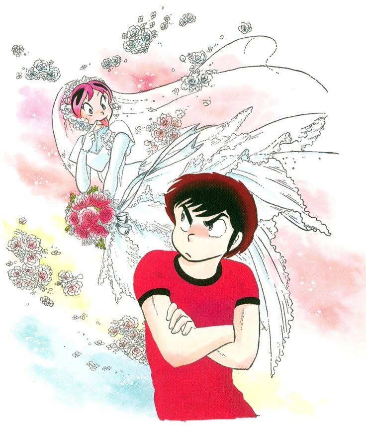
On top of this you have the general science-fantasy aesthetics that really betray a love for genre-fiction in general... there are a lot of wonderfully-drawn otherworldly creatures and spaces that pop off the page.
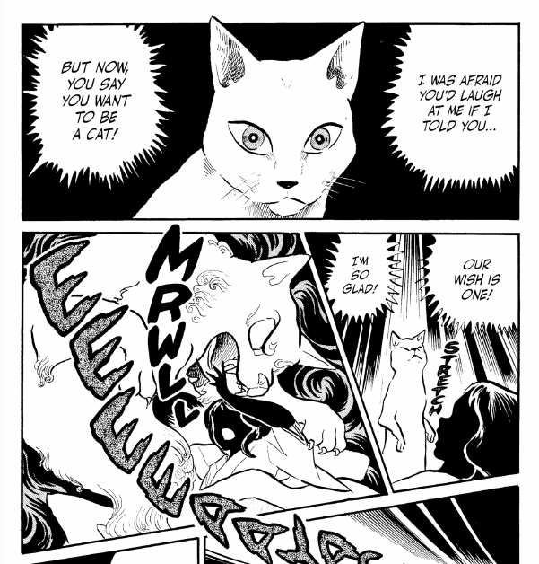
And on top of that, you have the emphasis on fashion and over-the-top 1980s aesthetics that feel so nostalgia-driven it's hard to imagine they were written contemporarily...
Rollerskating dates, neon-drenched cityscapes, dull sunsets, a conscious artificiality to pattern and design that grabs you and won't let you go... I'm not one for the stereotypical 80s shticks normally but it does feel downright dreamy...
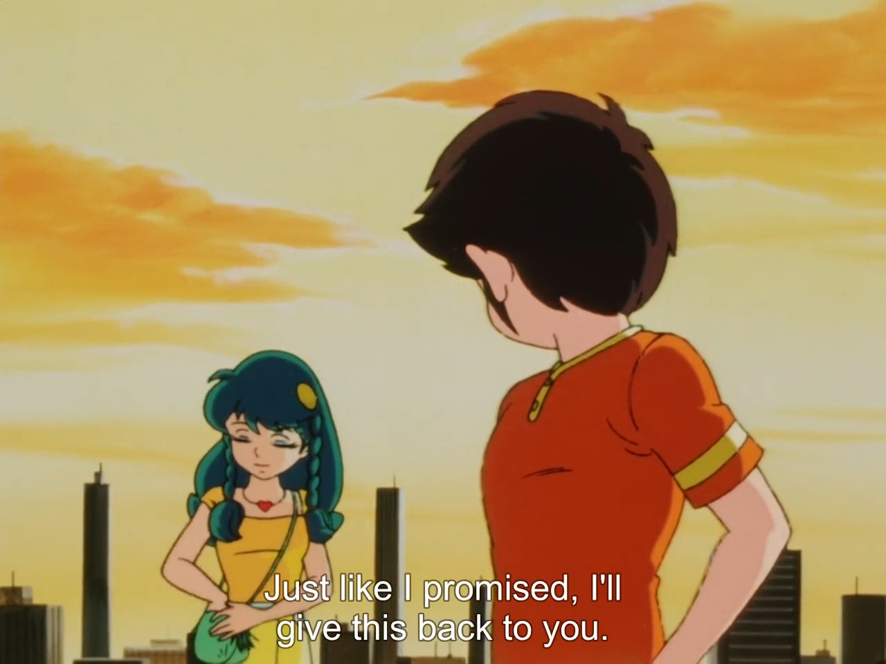
Ataru is absolutely not the kind of guy who should be written as fashion-conscious but, well, this is a shoujo manga, so he gets to dress up a whole lot (as does everybody!):
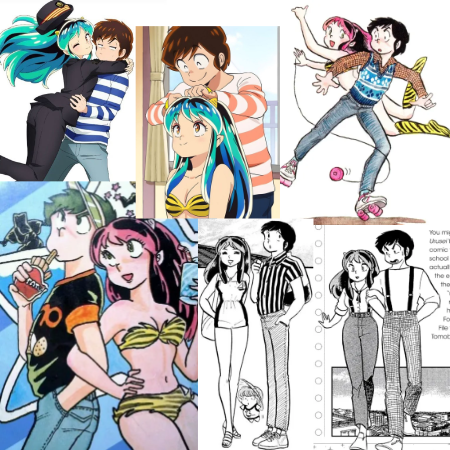
On a more formal note, something I admire in Takahashi's work a lot is two things: the 'sleekness' of it and the panelling rhythm.
By 'sleekness' I refer to the effect any particularly good black-and-white comic imparts on the viewer, where the strength of the linework is allowed to shine for itself above and beyond anything else. You get a similar sense from the work of people like Gabriel Hernandez and Daniel Clowes. It's almost minimalist in it's presentation... everything that sticks out sticks out, everything that falls away falls away, every line flows perfectly into itself, every background hits just the right amount of detail. It's the ultimate high of cartooning, at least for me, where it all just works with itself. I sound dumb, but, well, look at it:
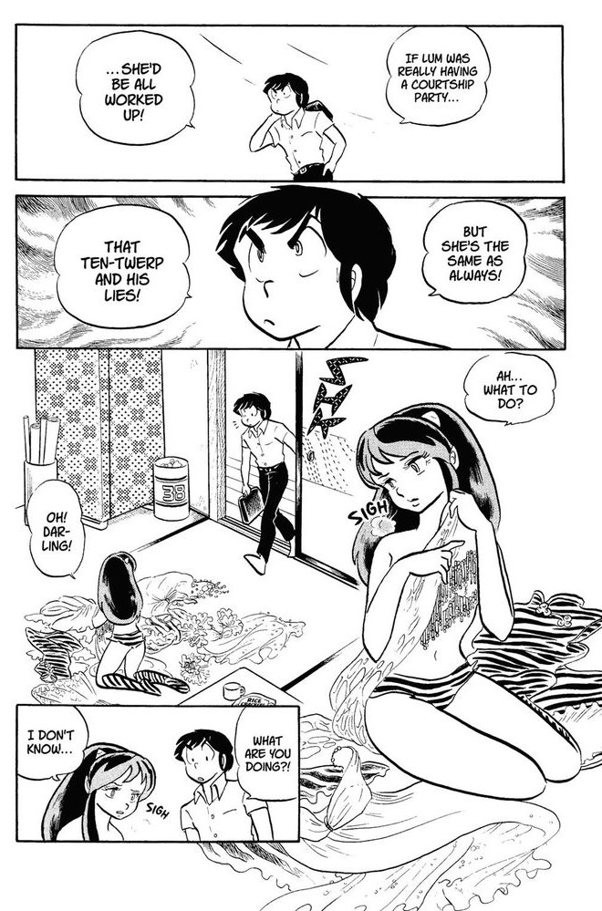
By 'panelling rhythm', I refer to the way the comic reads. The flow if you will. It's a little hard to define beyond that but you probably get what I'm saying. (I really should read some of the proper literature on this stuff, sometime...)
Panelling rhythm in comics is a lot like composition in photography or prose flow in written fiction, where you only notice it when it's rather bad or when it is flawlessly, exceptionally good. It's not really a bell curve, more like this:
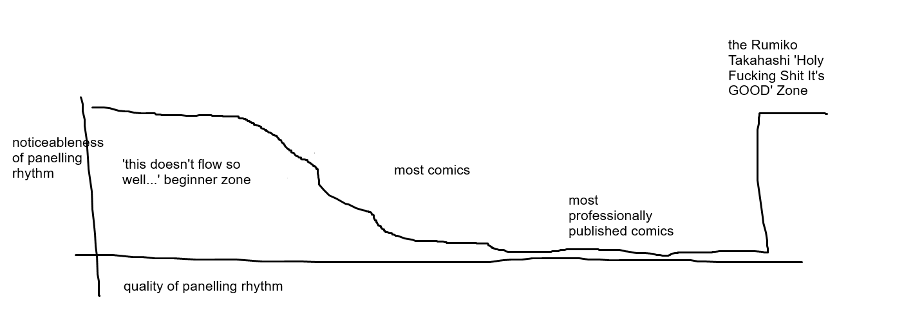
So for a layman like me to read a comic and single out it's flow as it's best element is very unusual indeed. I can't think of any other examples I've read that I think this about, but it really is the greatest strength on display here. And it's a damn good strength to have because it really just improves everything, writing-wise and art-wise. Every joke is funnier, every romantic moment is romantic-er, every page-turn flows intentionally into the next. I can't really provide examples without just straight-up piracy on this page but it really is something.
I mentioned the retro-SFF-inspired visuals above but I want to really dig into that angle because I rarely see people point it out.
The marriage of stereotypically girly color palettes and classic retrofuturism is really really unique. The 'bright pink flying saucers' genre of this and like two other pieces of media is probably my favourite thing ever. I really wish there was more of it in the world.
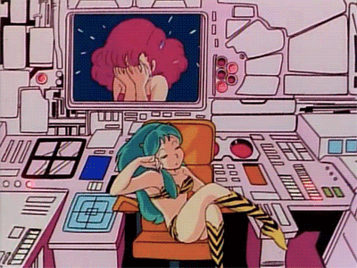
On top of the visuals, I'm fascinated by Urusei Yatsura's implied science-fiction setting backdrop. There're invading aliens with some bizarre strict protocol they follow and as long as that protocol is met they leave... but about a billion other species show up uninvited. See the preschool class in 'Children's Day Fright!' or the alien earmuff salesman in 'Eerie Earmuffs' or Ran's presence in general, to name just a few--a whole lot of nobodies show up to Earth for business or education or simply the novelty of a new planet, new peoples, new products. On the human end, everyone seems to get used to living among extraterrestrials pretty quickly; Class 2B's complete nonchalance towards alien visitors by later chapters sticks out as being really funny but barely acknowledged. I'm in love with this idea for a setting, where first contact is the typically depicted out-there once-in-a-lifetime experience... and then the rest of the neighborhood shows up!
The 1980s anime takes this a step further with lots of referential gags in background crowd shots of very not-human people hanging out with everyone else.
There's something so very charming and again dreamy about this to me. The happy union of the human race with the rest of the galaxy.
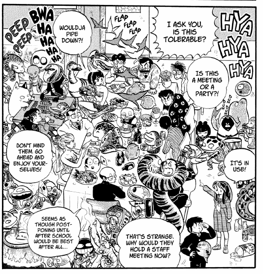
In science-fiction you don't see this kind of setting often. Moreso you see very pessimistic takes on this kind of situation (I'm reminded of a Tor-published story I can't recall the title of wherein a group of initially-friendly alien species begin exporting earth spirituality in increasingly bizarre and grotesque fashions, culminating in horrifically mutated clones of the protagonist's very Catholic grandmother being sold as pets.) But my favourite science-fiction stories are always the ones that imagine better worlds--worlds where technology solves problems, where people broadly get along with each other, worlds where diplomacy and science and grounded morality and sane thinking rule the day. The recent trend with alien fiction is to depict unimaginable gulfs between species--an unfortunate consequence of our current global thoughtclimate encouraging not only rejection of but flat refusal to engage with others' ideas, and a terribly dour and unfun way to approach the wonderful dream of meeting other sapient animals.
I've always thought first contact was the greatest optimistic idea fantastical (or--blech--'speculative') fiction has come up with. The idea that we might not be alone, that there might be others out there, that we might learn new ways of thinking and approaching problems and making art from them and that they might learn from us, too. Older science-fiction stories may involve alien wars and invasions, but they also often involve diplomacy, trade, learning, symbiosis, a realization that we all aren't so different (or, somewhat more negatively, that people really are alike all over.)
I want to dream like Ken Liu dreamt of interspecies libraries, like Anne Mccaffrey dreamt of friendly telepathic dragons, at darkest like Vonnegut dreamt of squids that see through time. I have no interest in gray-brown nightmares of 'living Chinese rooms'* or 'technodystopic thrillers maybe sort-of (not really) involving sentient octopi'* where there's all of one guess by the end of the novel at what one octopi word might mean to the octopi. I want to dream of universal understanding. And yet I'm apparently alone in this among science-fiction audiences. Why is optimism not 'in' anymore? What's wrong with us that we've lost the motivation to even imagine a better world, even in fiction?
...So it's nice to read an old-school comic that sees the value in those ideas, even if they really aren't it's main focus, at all.
*Not referencing any real SF books I hated... okay, maybe...
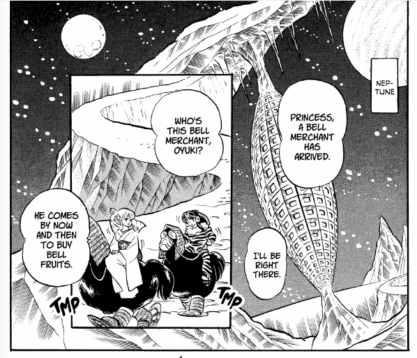
Aside from the one-off weirdos forming the focus of chapters there are lots of recurring unnamed alien species in Urusei Yatsura that exist only to fill space in backgrounds or crowds, or for sight gags. Most of them don't have any particular spotlight, but they turn up again and again. Several of them are self-evidently referential to classic SFF tropes or specific famous novels/art pieces but many of them don't trip my (usually pretty good) radar for that kind of stuff and seem to just be original freaks, like the flying manta-ray dudes or the striped land-loaches or vulture-faced cyborg men. (All of those are great band names, by the way.) It's fun to see them over and over again and wonder at what their deals are and why they're visiting the third planet from the sun.
The other thing you'll be wondering at, of course, is 'what the hell is she doing with him?' At least for the first, like, twenty chapters.
And then you start to go 'oh.' And then by the end of it, you're going 'shit, when's the (second, legally-binding) wedding?'
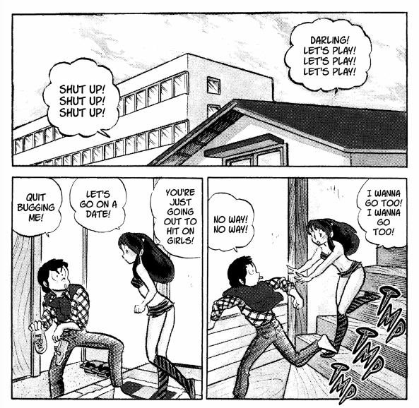
The romance at the centre of this comic really is special because, despite being in a comedy-first comic and being reverse-engineered from a one-off joke, it reads as more believable and grounded than a lot of more serious efforts (especially in other comics.)
Ataru and Lum are, fundamentally, similar people: exuberant, somewhat high-tempered, extremely stubborn and extremely emotionally-driven. Anytime they're not the focus of a chapter and get to mostly be background characters, they really do seem like friends, even early on. They have the same kind of humour and outlook, and where they differ they differ in often complementary fashions: Lum is physically affectionate where Ataru is driven torwards subtler emotiona displays (see: the sweet-potato/eyedrops chapter), Lum is very forward with her feelings while Ataru is more reserved, Lum is curiously optimistic about most things while Ataru is frequently immediately dismissive of unusual things... When pushed, they take each other very seriously (see: the entirety of the 'Lum turns into a cow' chapter, the frog-kissing chapter, the aforementioned rabbit-dimension chapters...) Ataru is clearly out of his element at first but as the series progresses he seems more and more comfortable around Lum, to the point of general casually-romantic things like this:
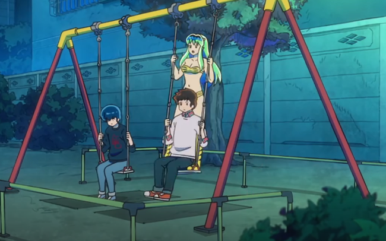
They like each other. And they like chasing each other.
Obviously this is the whole shtick of this series, that their relationship is an endlessly repeating extension of their tag game, where they take turns being 'it'; Ataru wants Lum most when she doesn't want him, and vice-versa; all three versions of the series end with a joyful refutation of typical romance-fiction progression, with Ataru refusing to say he loves Lum even under great duress.
(This is maybe the one point where I like the remake's version best, for the more celebratory tone it's afforded.)
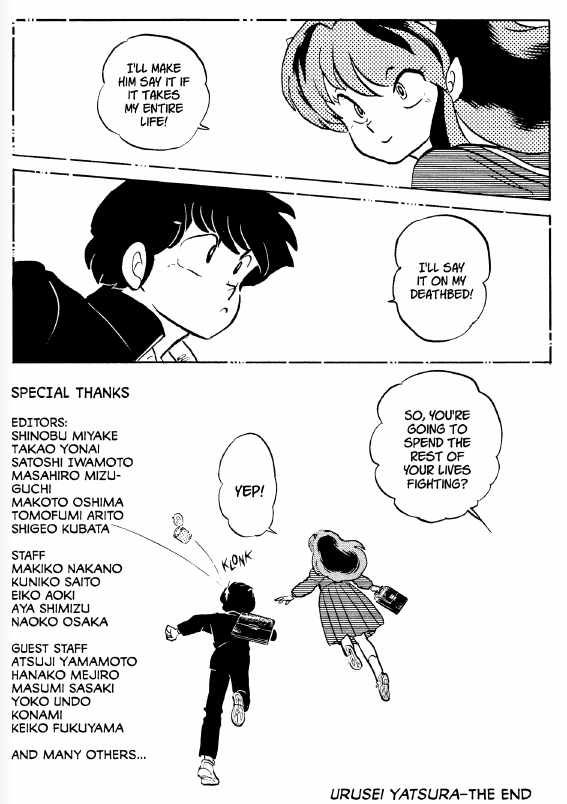
The same kind of slow ticking character development and very genuine-feeling relationships apply to practically all of the main cast... Shinobu sticks out in how she moves from wishing Ataru would leave that alien hussy to hoping that maybe Mendou will take a shining to her to aggressively refuting any kind of romance to following around the other 3 out of some form of rubbernecking curiosity (wouldn't you?) to her ending with a slight lowkey romance with the genuinely nice, reasonable Inaba. I feel like in some ways my path through high-school was similar, though in regards to friendships rather than dating... maybe everyone's is?
Ran and Rei are probably my favourites of the side characters, the two-faced hot-pink-lolita vampiric former-friend and the were-hippo-ox-tiger (best combination of animals ever... well, except for badger-dinosaurs, of course) with an approximate IQ of -7 who seems to display absolutely no interest in anything but food and his ex-girlfriend Lum. They're seen together more and more as the series goes on and while they get no formal ending (compared to the rest of the recurring cast) the implication is there. It's all very sweet.
There are loads more examples--too many to list really, considering the size of the cast--and it's really the main reason I've come back to re-read this so, so many times. Everything changes but everything stays the same. I think you can probably understand the appeal of that to someone going through some shit in senior-year high-school.
I had a really rough final year. Details aren't for sharing on the Internet, of course, but after finally meeting some people I really liked after being really lonely throughout middle school I had to essentially stop speaking to most of them for certain reasons. It was so hard and then my whole fiasco with not-quite-starting university made it so much harder even when it was all said and done. It was nice to have a light pulpy beautifully-drawn excruciatingly long comic to keep coming back to, over and over, during that time, just as a comfort factor.
I kept putting off writing this page, and re-doing it when I did write it, and I especially hated writing this last paragraph, which I put off for over a week after finishing the rest; and I think part of that is it feels a bit like closing off a certain weird chapter of my life. Not a happy one but a big one nonetheless. Moving on is always hard. Being a teenager makes it harder.
One day I'll probably reread this page and laugh. Maintaining a website is like keeping an extended journal, told in a dizzying multimedia dreamweb of ideas and images and things that aren't yours, without the express intention of self-reflection and meditation so it all seems to pour out of your mind accidentally. It's like a trick you play on yourself.
I still haven't seen Beautiful Dreamer.
FAVOURITE CHAPTERS
For my own reference mainly. 17 double-length volumes and 195-plus-46-plus-OVAs episodes is a lot to keep track of and sometimes I just wanna find something to reread quickly. Listing starts of multi-part stories only here.
Numbered according to Viz Media omnibus releases.
- 'Valentine's Day Disillusion' Vol 6 Chap 17/119 (the one with the chocolate)
- 'Dolphin Dating[...]' Vol 7 Chap 21/145 (the one with the dolphin)
- 'Wretched Shutaro' Vol 9 Chap 10/178 (horned humanoid aliens, stable timeloops, childhood trauma involving swords, April 13... I think I know where that one guy got the idea for that one thing)
- 'Deranged Marriage' Vol 5 Chap 7/87 (reader contest/party chapter)
- 'Memories and a Close Call' Vol 4 Chap 1/59 ('what is Ran's problem?' chapter/arc)
- 'The Heian Arc' Vol 4 Chap 16/75 (self-explanatory)
- 'A Night Alone' Vol 9 Chap 14/75 (also pretty self-explanatory)
- 'Tanabata Date' Vol 2 Chap 20/36 (again... also man I never remember this one being so early. seems like it should be way further down the line.)
- 'Since Your Parting' Vol 2 Chap 18/34 (peak)
- 'Good Day for a Departure' Vol 1 Chap 8/8 (hey, I have this one! Legally, physically even!)
- 'Open the Door' Vol 16 Chap 7/329 (this world is inhabited by creatures known as bnnuys)
Have to find the name of the one with the drawing robot, the one where Ataru gets a job at the interdimensional bathhouse, that one Ryunnosuke one I like a lot, the one with the sweet potatoes, the one with the intergalactic student council. Later.
OTHER STUFF
I made a Spotify playlist. It's a little ramshackle but whatever. It's a mix of mostly-British 80s crap and rockabilly revival, and a few other things. Click below and enjoy:
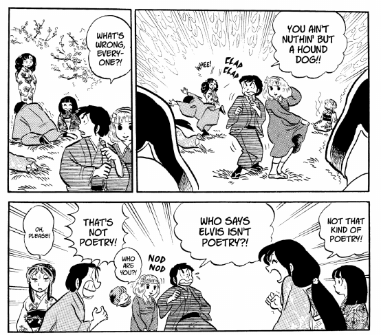
(I love Lum's exasperated look in that panel, you just know they've had this conversation at least 80 times)
TV Tropes is a bad website but it has a numbered list of chapters in order, which is very handy. Just be careful not to lose your afternoon surfing it...
And finally, the original contents of this page, alll the way back in June 2024.J ust a bunch of dumb 'incorrect quotes' edits.
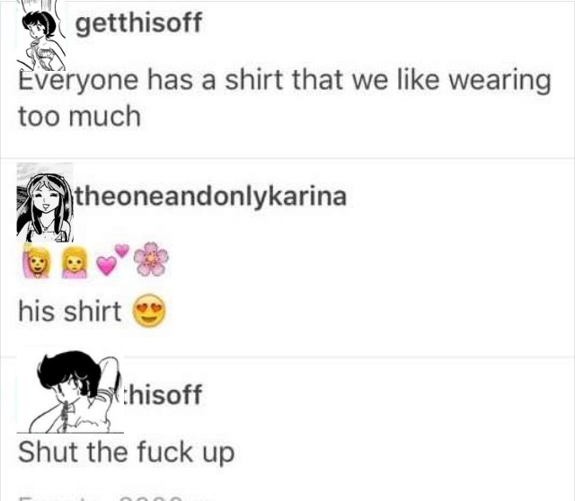
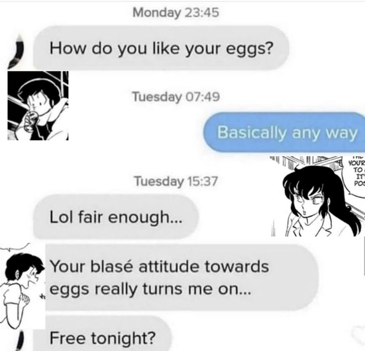
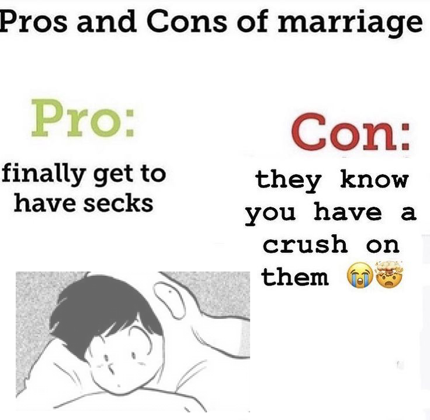
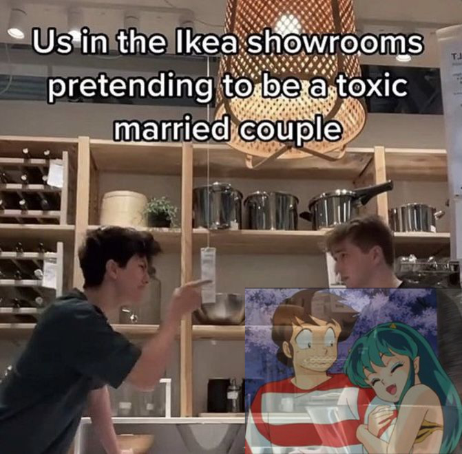
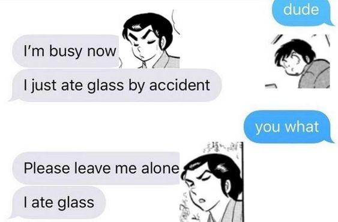
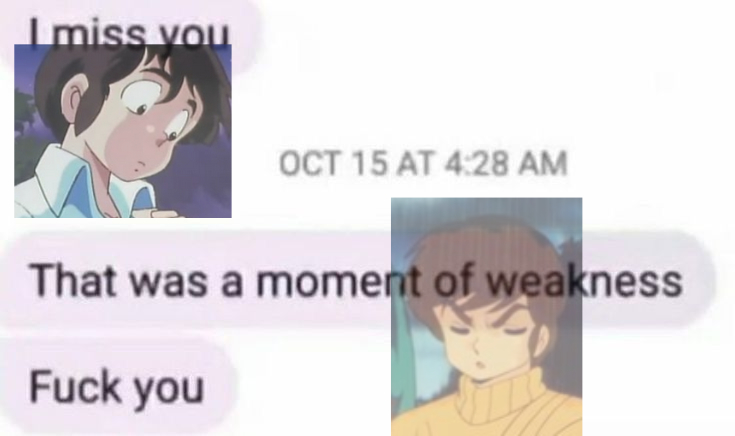
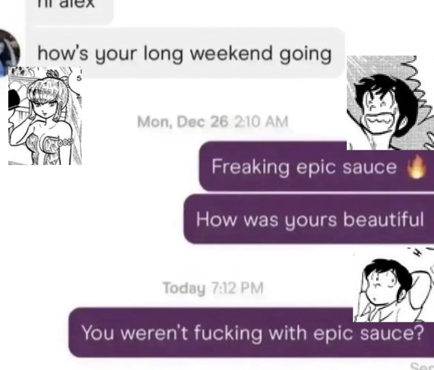

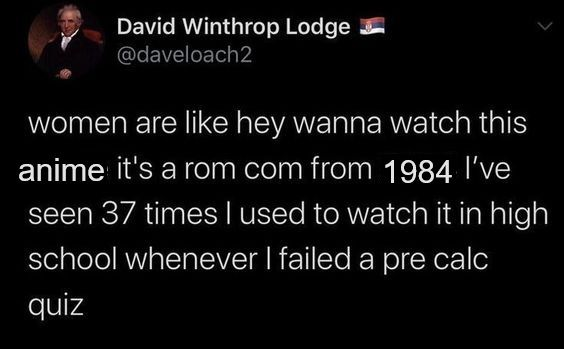

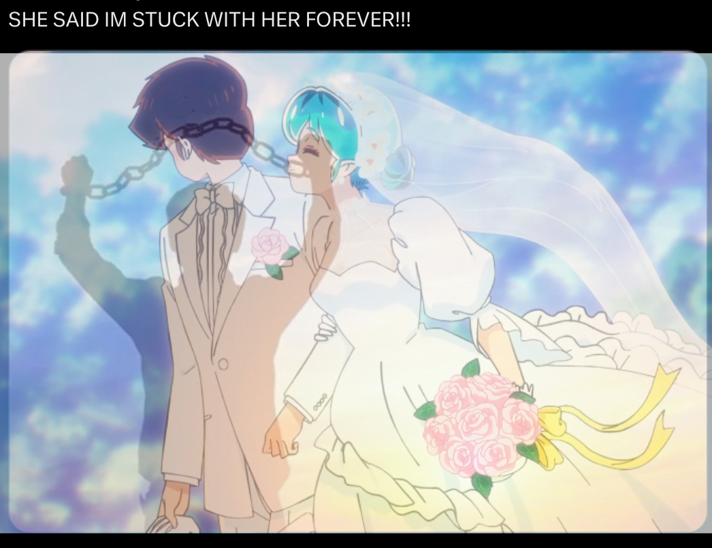